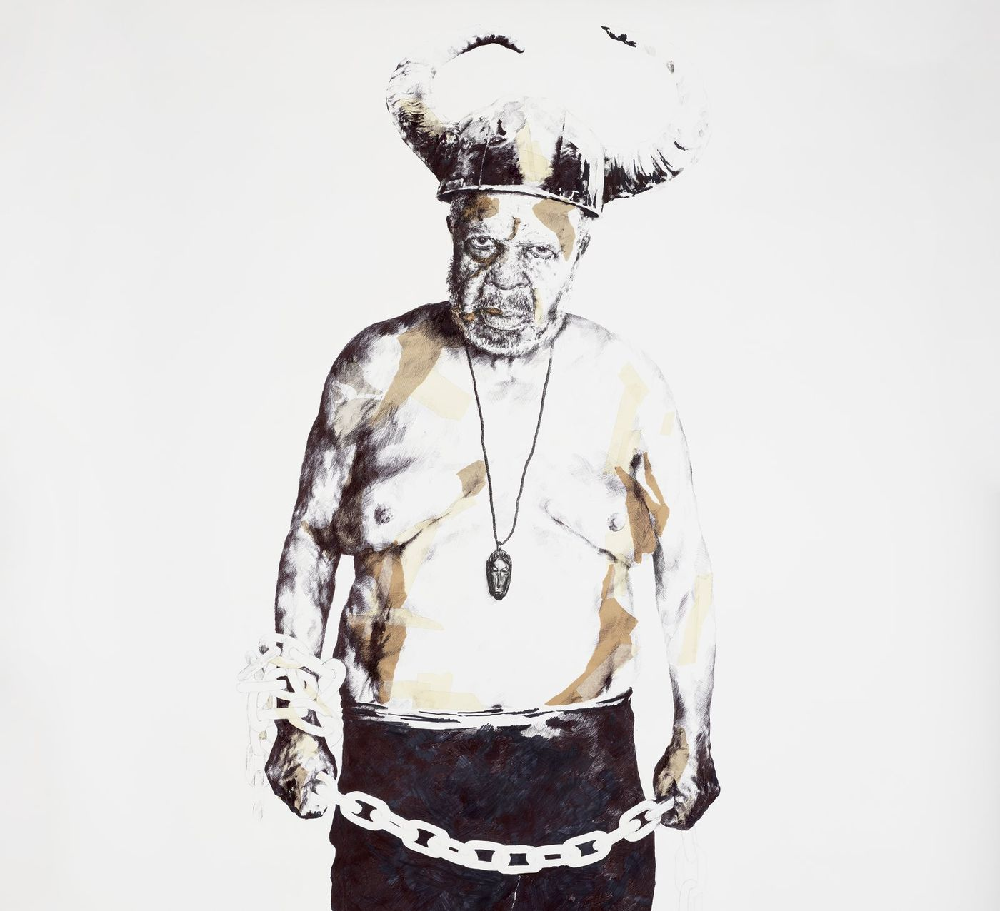
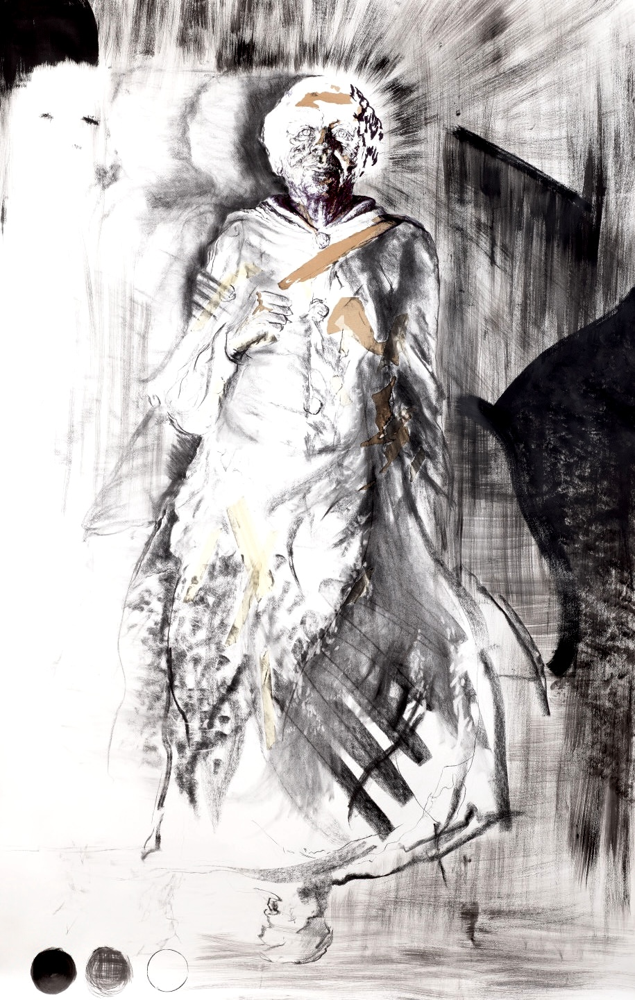
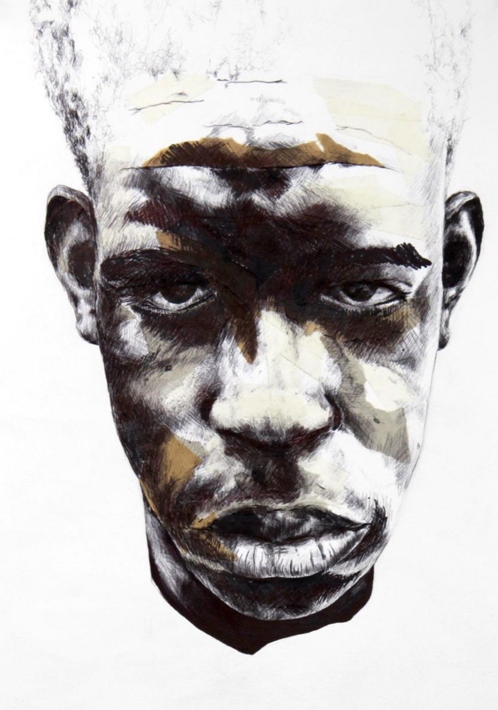
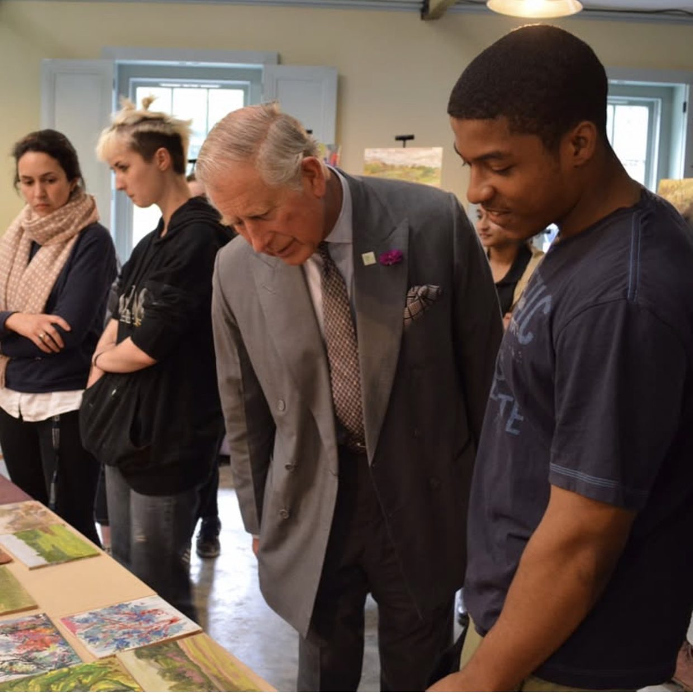

Ezra Myers
A British-Caribbean artist working with folklore, ancestral presence and the inherited codes of Afro-diasporic life.
Working across drawing, collage and moving image, Myers makes large scale figurative works shaped by masks, ritual, distortion and the survival of folk knowledge across generations.
The work is rooted in Afro Caribbean folklore, in the codes carried through masquerade, music, movement and memory. Each image holds the figure as portrait, symbol and structure.
Laws of Folk
On folklore, memory and the unwritten laws of Afro diasporic life
Every culture carries a body of law that was never written down. Not legislation, inheritance. The knowledge of how to move through the world. What the mask means. What the drum says. What the figure in the street during Carnival is actually doing. What survives when official history refuses to record you.
Laws of Folk is a major body of work exploring those laws. Through large scale figurative drawing, dense mark making, collage and embedded symbolism, the project asks how Afro diasporic folklore survives, not in archives, but in bodies. In performance. In music. In masquerade. In the faces people wear when they move through worlds that were not built for them.
The central figures are drawn from Trinidadian carnival tradition, the Jab Jab, the Jab Molassie, the stick fighter, the drummer. The work is not illustration. It does not explain folklore. It inhabits it. Each piece holds realism against distortion, presence against pressure, visibility against concealment.
Laws of Folk will bring together large scale works on paper, smaller studies and selected new pieces exploring Caribbean folklore, masks, sound, ancestral presence and the unwritten cultural laws carried through Afro diasporic life. Key works include Pay the Devil, Mary in the Light and Jay, with additional works to be unveiled at the exhibition.
The Unwritten Record
The Windrush generation arrived in Britain carrying a complete cultural world, music, masquerade, ritual, belief, folklore, embodied knowledge passed through generations of Caribbean life. Very little of it was formally documented. The institutions that might have preserved it were not built for it. Much of what survived did so through people, through community, through the continuation of practice.
Laws of Folk is positioned at the edge of that continuity. It documents what is still living, the folklore that continues in steel pan orchestras, in Notting Hill Carnival, in the Jab Jab who still takes to the street, while acknowledging what is at risk of being lost as that generation passes.
Trinidad, Field Research
In 2024, supported by the Westway Trust International Artist Bursary, Myers undertook research in Trinidad, attending carnival, documenting masquerade traditions, meeting practitioners of stick fighting and steel pan, studying the Jab Jab and Jab Molassie figures in their original context. The work that followed is rooted in that field research.
Trinidad is where the laws originated. London is where they were carried. Laws of Folk moves between both, anchored in the Trinidadian cultural source while examining what that inheritance looks like in a West London community that has held it for seventy years.
Cultural memory does not disappear suddenly. It thins.
October 2026 is Black History Month. It is also the year the Windrush generation's story is being contested, commemorated and in some cases still corrected. Laws of Folk is not a commemorative exhibition. It is an active one, insisting that this cultural knowledge is not past tense, not heritage, not nostalgia. It is living law. It still governs. It still moves through people. The work exists to make that visible.
Opening Night
Private view and opening reception. By invitation. For collectors, curators, institutional partners, community leaders and those whose cultural inheritance the work speaks to.
Panel Discussion
A conversation on Afro diasporic folklore, cultural archiving and the relationship between visual practice and living cultural memory. Speakers to be confirmed.
Workshop Programme
Drawing and mark making workshops for children and young people, rooted in the visual traditions the exhibition explores. Available to schools and community groups.
Press & Institutional Enquiries
For curatorial introductions, press requests, institutional partnership conversations and collector enquiries regarding works in the exhibition.
Laws of Folk is conceived as a body of work that extends beyond a single exhibition. Following London, the project is positioned for further development, a return to Trinidad, expanded research, and international presentation.
Institutions and partners interested in the future development of Laws of Folk are welcome to make contact.
Laws of Folk



To Be Unveiled
Between the Beat
A life scale work exploring sound, rhythm and ancestral memory through the figure of a seated drummer. The piece continues Myers' use of embedded faces, masks and shadow as carriers of inherited presence.
Face to Face
A smaller work continuing Myers' investigation into masks, doubled identity and the visual tension between surface and hidden presence. Most people walk past him. This piece does not allow that.
Lion
A work held back for the exhibition, extending Myers' language of embedded symbolism, animal presence and ancestral watchfulness.
Laws of Folk is not only a visual project. It is a research practice. The work emerges from sustained engagement with Afro Caribbean cultural history, oral tradition, field documentation and formal investigation of how knowledge survives in the absence of official record.
Folklore as Living Law
The central argument of Laws of Folk is that folklore is not decorative, it is legislative. The beliefs, rituals, stories and embodied practices carried through Afro diasporic culture form a body of law: a way of moving, remembering and surviving when official structures refuse to hold you.
This research strand examines the theoretical underpinning of the whole project: what it means to read carnival masquerade, stick fighting, steel pan, the Jab Jab figure and oral tradition not as cultural colour but as encoded information, as the legal and moral architecture of a community that had to build its own.
Carnival, Masquerade and the Mask
The mask in Afro Caribbean carnival tradition is not concealment. It is transformation. To wear the Jab Jab is not to hide, it is to become something that has permission to move through the world differently. The mask grants the wearer access to a register of behaviour, speech and presence that the unmasked body cannot safely inhabit.
This strand of the research follows the mask from its West African origins through the Middle Passage and into the carnival traditions of Trinidad, Jamaica and eventually the streets of Notting Hill. It examines what the mask carries, what it protects, what it demands of those who encounter it, and how it functions in Myers' figurative work as a visual and conceptual device rather than an illustrative reference.
The Jab Jab specifically, the grease covered, chain rattling carnival figure at the centre of Pay the Devil, is studied here as a figure of controlled transgression: one who moves through the crowd demanding something from those who have more, in a ritual frame that makes refusal difficult and compliance meaningful.
Sound, Memory and the Drum
Before Caribbean communities had access to paper, institutions or official record, they had rhythm. The drum was the original archive, a technology for storing and transmitting information that could not safely be written down, that needed to be felt in the body to be fully received.
Steel pan, invented in Trinidad in the 1930s, is the continuation of that tradition through new materials. The pans themselves were built from oil drums discarded by colonial industry; the music played on them encoded community, identity, and creative authority in the same gesture. Myers' engagement with the Metronome Steel Orchestra, one of the UK's first steel bands based in Kensal Road, and with the Mangrove Steel Band at The Tabernacle in Notting Hill, roots this research in a living practice rather than a historical one.
Between the Beat addresses this directly, the body that carries sound as the body that carries memory, and the relationship between both in the construction of the Laws of Folk series.
Trinidad, Field Research
In 2024, supported by the Westway Trust International Artist Bursary, Myers undertook an extended research visit to Trinidad, the cultural source of the folklore at the centre of Laws of Folk. The visit was structured around carnival season: attending mas camps, documenting masquerade preparation, witnessing the Jab Jab and Jab Molassie figures in their original context, and meeting practitioners of stick fighting and steel pan who still hold and transmit those traditions.
The visit was not tourism. It was primary research, fieldwork in a cultural territory that the artist's heritage connects to but that the artist had not previously documented at this level of sustained attention. The photographs, recordings, sketches and field notes from Trinidad form the material foundation of the Laws of Folk body of work.
A second research phase in Trinidad is planned following the London exhibition, extending the investigation and positioning the project for international development.
Studio Translations
The relationship between field research and the finished work is not illustration. Myers does not document what he finds and then draw it. The research is translated, passed through the formal language of the studio, through sustained mark making on large scale paper, through the layering of collage, ink and charcoal until the image finds its own logic.
This translation process is where the "faces within faces" structure of the work emerges, the hidden forms, the masks within masks, the figures that can be found in the dense mark making only through sustained looking. It is where the gold leaf enters: not decoratively, but as material insistence. Gold in a work about people who were never offered it is not decoration. It is an argument.
This research strand documents the studio practice itself, the methods, materials, scale decisions and formal choices through which the cultural research becomes image.
Myers' practice sits across drawing, moving image and cultural research. His work has been supported and recognised by organisations across visual art, film, cultural heritage and arts education, with ongoing relationships that position Laws of Folk within a serious institutional context.
Awards
Development
School Context

This moment forms part of Myers' wider artistic development through the Royal Drawing School and his ongoing commitment to drawing as a serious foundation for image making.
Moving Image
Connections
For curators, institutions and collectors interested in the work or in the development of Laws of Folk.
Ezra Myers is a British Caribbean artist based in London, working across drawing, collage and moving image. His practice explores Afro diasporic folklore, inherited memory, masks and ancestral presence, the cultural codes carried through ritual, story, performance and image across generations.
Myers is known for large scale figurative works built through controlled realism, dense mark making, distortion and embedded symbolism, placing figures between ritual presence and historical pressure, and concealing faces, masks and hidden forms within the dense structure of each image. His primary materials are ink, charcoal and collage on Bockingford watercolour paper, working at life size scale, approximately 260 to 290 centimetres. The work approaches institutional dimensions without apology.
His practice is rooted in Trinidadian carnival tradition, the Jab Jab, the Jab Molassie, the stick fighter, the drummer. These figures appear not as illustration but as cultural argument: evidence of a body of knowledge that was never officially recorded, that survived through embodiment, and that Myers' work insists on treating as serious, urgent and aesthetically necessary subject matter.
He is currently developing Laws of Folk, a major body of work and forthcoming solo exhibition examining Caribbean folklore, Trinidadian carnival tradition and the unwritten laws that shape Afro diasporic cultural inheritance. The exhibition opens in London in October 2026 during Black History Month.
Myers trained at the Royal Drawing School and holds an animation degree. His moving image work has been shown through BFI programming at the Barbican, at the B3 Biennial of the Moving Image, and featured by CCCB in Barcelona. His practice has been supported by Arts Council England, the Westway Trust International Artist Bursary, the Eaton Fund, Carnival Village Trust and the Portobello Trust.
Request CV, studio@ezramyers.comStudio, collecting and institutional enquiries
Myers is based in London and available for selected studio visits by appointment. Curatorial introductions, institutional partnerships, press enquiries and collector conversations are welcome.
Based in London. Available for selected studio visits by appointment.